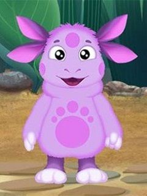

|  |
«Лунтик и его друзья»Главный герой сериала; попавший с Луны на Землю. Покрыт сиреневой шёрсткой, две руки и две ноги, уши двойные. Сзади небольшой хвост. Умеет плавать и может дышать под водой. Хороший, добрый, правильный, отзывчивый и справедливый. Играет на флейте. |
| Сезон | Серии | Годы |
|---|---|---|
| 1 сезон | 1—80 | 2006—2007 |
| 9 сезон | 490—538 | 2018—2021 |